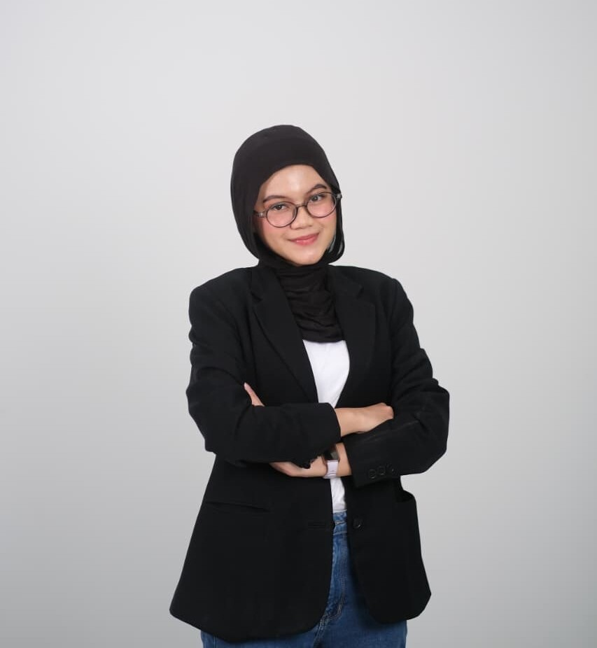

Mahasiswa semester 3 Program Studi Sistem Informasi di Telkom University yang memiliki minat di bidang teknologi informasi dan pengelolaan sistem. Memiliki pemahaman dasar mengenai database, SQL, dan Microsoft Office dari proses pembelajaran selama perkuliahan. Mampu bekerja sama dalam tim, memiliki kemauan belajar yang tinggi, serta bertanggung jawab dalam menyelesaikan tugas dan pekerjaan. Aktif mengikuti organisasi, kepanitiaan, serta kegiatan volunteering untuk mengembangkan kemampuan komunikasi dan pengalaman berorganisasi.
Program Studi Sistem Informasi
Semester 3
Rekayasa Perangkat Lunak
2023 - 2025
Magang - Divisi Sumber Daya Manusia (SDM)
Divisi Medical